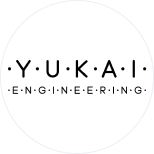

ユカイ工学株式会社
男性
東京
1件のプロジェクトファウンダー
経験領域
# RealTech（Real Estate Tech / 不動産系）
# Smart Home Tech（スマートホーム）
スキル
チームビルディング
リーダーシップ
プロジェクト管理
メンバーマネジメント
新規事業経験あり
興味関心
社会課題を解決したい
本業で新規事業を創りたい
ユカイ工学は「ロボティクスで世界をユカイに」をビジョンに掲げ、家庭向けロボット市場の創出にチャレンジするスタートアップ企業です。ロボコン出場経験のあるエンジニア、プロダクトデザイナーなどが集まりユニークでクリエイティブな商品を生み出し続けています。しっぽのついたクッション型セラピーロボット「Qoobo」シリーズは、2018年の発売から累計3万台を突破、グッドデザイン賞やRed Dot Design Awardを受賞。小学生向けのロボット製作キット「kurikit」シリーズはNHKエンタープライズ主催「小学生ロボコン」大会で公式キットとして採用される。家族をつなぐコミュニケーションロボット「BOCCO」シリーズは2021年、音声認識や表現力の大幅な進化を遂げた新製品「BOCCO emo」を発売、グッドデザイン賞とIF Design Awardを受賞している。